Analizzatore di un sistema dinamico, lineare e omogeneo sul piano a coefficienti costanti
Questo post presenta il programma Python cc-lin-plane-homo-sys-analyzer.py e la sua usage in linea di comando.
Il programma analizza, utilizzando sia tecniche simboliche (tramite SymPy) che tecniche numeriche (tramite NumPy),
il comportamento di un sistema dinamico lineare e omogeneo sul piano a coefficienti costanti definito
da un sistema di due equazioni differenziali espresso in forma matriciale:
$$ \frac{d\mathbf{x}}{dt} = A\mathbf{x}$$
dove $A$ è una matrice 2x2 a coefficienti costanti e reali
e $\mathbf{x}$ è la funzione vettoriale incognita $\mathbf{x}(t) : {\rm I\!R} \to {\rm I\!R}^2$.
Il programma dapprima determina i punti critici e poi, analizzando gli autovalori e gli autovettori della matrice $A$,
classifica i punti critici nella opportuna categoria analizzandone la tipologia e la stabilità.
Inoltre il programma calcola l'integrale generale in forma simbolica della soluzione del sistema e opzionalmente calcola anche una soluzione particolare
tramite la lambidicazione della soluzione generale, a patto che l'utente passi in linea di comando i valori delle due costanti di integrazione
che sono presenti nella soluzione generale.
Infine il programma traccia anche il ritratto delle fasi sul piano che fornisce una analisi qualitativa del comportamento delle traiettorie
e opzionalmente traccia la curva della soluzione particolare sul ritratto delle fasi.
Si ringrazia la prof.ssa Fausta D'Acunzo di Preparazione 2.0 per il supporto teorico fornito sui sistemi di equazioni differenziali.
Per ottenere il codice si veda il paragrafo Download del codice completo in fondo a questo post.
Per un approfondimento sullo studio dei sistemi non lineari e autonomo sul piano si veda il post
Analizzatore di un sistema dinamico non lineare e autonomo sul piano tramite il teorema di Hartman-Grobman pubblicato sempre su questo sito web.
Convenzioni
In questo post le convenzioni adoperate sono le seguenti:
- $t$ è la variabile indipendente tempo.
- $A$ è la matrice 2x2 dei coefficienti del sistema; tali coefficienti sono costanti e reali.
- $\mathbf{x}$ è da intendersi la funzione incognita vettoriale $\mathbf{x}(t) : {\rm I\!R} \to {\rm I\!R}^2$.
- $x(t)$ e $y(t)$ sono le due componenti della funzione incognita $\mathbf{x}(t)$.
- $C1$ e $C2$ sono le costanti arbitrarie di integrazione della soluzione generale.
- $\lambda$ indica un autovalore qualsiasi, $\lambda_1$ e $\lambda_2$ sono i due autovalori della matrice $A$.
- $\xi$ indica un autovettore qualsiasi, $\xi_1$ e $\xi_2$ sono due autovettori linearmente indipendenti della matrice $A$.
- $\eta$ indica un autovettore generalizzato qualsiasi, $\eta_1$ e $\eta_2$ sono due autovettori generalizzati linearmente indipendenti della matrice $A$.
- $\Re{(\lambda)}$ e $\Im{(\lambda)}$ sono gli operatori che estraggono rispettivamente la parte reale e la parte immaginaria di un autovalore complesso.
- $\Re{(\xi)}$ e $\Im{(\xi)}$ sono gli operatori che estraggono rispettivamente la parte reale e la parte immaginaria di un autovettore complesso.
Definizioni
In questo post valgono le seguenti definizioni:
-
Punto critico: un punto dove $\frac{d\mathbf{x}}{dt}$ calcolato in tale punto sia uguale a $\mathbf{0}$ per ogni $t$;
considerando la definizione del sistema, vale per transitività:
$$ \frac{d\mathbf{x}}{dt} = A\mathbf{x}=\mathbf{0}$$
quindi cercare i punti critici, ovvero quelli in cui la derivata di $\mathbf{x}$ si annulla per ogni $t$, equivale a cercare i vettori del piano tali che
moltiplicando la matrice $A$ per essi si ottiene il vettore $\mathbf{0}$ (che giace sull'origine del piano).
-
Punto stazionario o di equilibrio: un punto critico che sia di minimo relativo o di massimo relativo, e non invece un punto di sella.
-
Varietà: dette manifold in inglese, sono le traiettorie speciali determinate dagli autovettori della matrice $A$.
Soluzione generale dei sistemi dinamici lineari omogenei a coefficienti costanti
Dal calcolo differenziale si sa che l'integrale generale della soluzione del sistema è una delle tre seguenti tre forme:
- (1) $\mathbf{x}(t) = C_1 e^{\lambda_1 t} \xi_1 + C_2 e^{\lambda_2 t} \xi_2$
- (2)
$\mathbf{x}(t) = C_1 e^{\lambda t} \eta_1 + C_2 e^{\lambda t} (t \eta_1 + \eta_2)$ - (3)
$\mathbf{x}(t) = C_1 e^{\Re{(\lambda_1)} t} (\cos(\Re{(\lambda_1)} t) \Re{(\xi_1)} - \sin(\Im{(\lambda_1)} t) \Im{(\xi_1)} ) + C_2 e^{\Re{(\lambda_2)} t} (\cos(\Re{(\lambda_2)} t) \Re{(\xi_2)} - \sin(\Im{(\lambda_2)} t) \Im{(\xi_2)} ) $
Funzionalità del programma
Il programma prende in input, tramite linea di comando, i quattro coefficenti reali della matrice $A$ che rappresenta il sistema da studiare e ne determina le seguenti caratteristiche:
- L'insieme dei punti critici, che è costituito soltanto dall'origine $\left[\begin{matrix} 0 & 0 \end{matrix} \right]^\dag$ se il determinante della matrice $A$ è diverso da zero (caso sistema semplice), altrimenti è una retta passante per l'origine, o l'intero piano nel banalissimo caso della matrice $A$ uguale alla matrice nulla.
- Il determinante della matrice $A$, per distringuere tra sistema semplice o non semplice.
- Gli autovalori e gli autovettori della matrice $A$, distinguendo i vari casi tra reali vs complessi, segno (della parte reale) concorde o discorde, casi degenere (molteplicità geometrica minore di 2); in questo ultimo caso il programma calcola gli autovettori generalizzati tramite un algoritmo basato sui blocchi di Jordan.
- La classe dei punti critici, divisi tra stabile vs instabile e tra nodo, punto, sella, linea, singolare, degenere ed eventuali loro combinazioni.
- Soluzione simbolica dell'integrale generale, utilizzando una delle tre forme (1), (2) o (3) in funzione della classe dei punti critici.
- Le traiettorie, tracciate in rosso e calcolate risolvendo numericamente il sistema di equazioni differenziali variando in modo discreto la condizione iniziale al tempo $t=0$.
- Una traiettoria particolare, tracciata in colore oro e calcolate per lambificazione della soluzione generale; il tracciamento di questa soluzione particolare è opzionale e richiede inoltre in linea di comando il valore delle due costanti arbitrarie di integrazione.
- Il gradiente, tracciato come campo vettoriale con frecce di colore blu; la lunghezza delle frecce indica il valore del modulo del gradiente, il verso indica la direzione in cui il vettore gradiente tende a $\mathbf0$.
- Gli autovettori, disegnati solo se hanno le componenti reali; un autovettore corrispondente a un autovalore positivo è disegnato con una freccia color magenta, un autovettore corrispondente a un autovalore negativo è disegnato con una freccia color verde, un autovettore corrispondente a un autovalore uguale a $0$ è disegnato con una freccia color nero.
- Le varietà (manifold), disegnati solo solo se gli autovettori hanno le componenti reali e, nel qual caso, sono tracciante in rosso come rette la cui direzione è individuata dagli autovettori.
L'usage del programma
Per ottenere l'usage del programma cc-lin-plane-homo-sys-analyzer.py è sufficiente eseguire il seguente comando:
$ python cc-lin-plane-homo-sys-analyzer.py --helpusage: cc-lin-plane-homo-sys-analyzer.py [-h] [--version] --matrix MATRIX
[MATRIX ...] [--t_end T_END]
[--t_num_of_samples T_NUM_OF_SAMPLES]
[--x0_begin X0_BEGIN]
[--x0_end X0_END]
[--x0_num_of_samples X0_NUM_OF_SAMPLES]
[--y0_begin Y0_BEGIN]
[--y0_end Y0_END]
[--y0_num_of_samples Y0_NUM_OF_SAMPLES]
[--plot_favourite_sol PLOT_FAVOURITE_SOL]
[--C1 CONSTANT_OF_INTEGRATION_C1]
[--C2 CONSTANT_OF_INTEGRATION_C2]
[--font_size FONT_SIZE]
cc-lin-plane-homo-sys-analyzer.py
analyzes a dynamyc system modeled by a linear planar system
optional arguments:
-h, --help show this help message and exit
--version show program's version number and exit
--matrix MATRIX [MATRIX ...]
coefficents of matrix
|a b|
|c d| of the system
--t_end T_END In the phase portait diagram, it is the final value
of the interval of variable t (starting value of t is 0).
For backward time trajectories, t goes from -t_end to 0;
for forward time trajectories, t goes from 0 to t_end.
--t_num_of_samples T_NUM_OF_SAMPLES
In the phase portait diagram, it is the number of samples
of variable t between -t_end and 0
for backward time trajectories
and also it is the number of samples of variable t
between 0 and t_end
for forward time trajectories
--x0_begin X0_BEGIN In the phase portait diagram, it is the starting value
of the interval of initial condition x0
--x0_end X0_END In the phase portait diagram, it is the final value
of the interval of initial condition x0
--x0_num_of_samples X0_NUM_OF_SAMPLES
In the phase portait diagram, it is the number of samples
of initial condition x0 between x0_begin and x0_end
--y0_begin Y0_BEGIN In the phase portait diagram, it is the starting value
of interval for initial condition y0
--y0_end Y0_END In the phase portait diagram, it is the final value
of interval for initial condition y0
--y0_num_of_samples Y0_NUM_OF_SAMPLES
In the phase portait diagram, it is the number of samples
of initial condition y0 between y0_begin and y0_end
--plot_favourite_sol PLOT_FAVOURITE_SOL
'yes' to plot the favourite solution;
if it is 'yes' C1 and C2 are used
to choose the favourite solution
--C1 CONSTANT_OF_INTEGRATION_C1
Value of constant of integration C1 to choose
(together with C2) the favourite solution
--C2 CONSTANT_OF_INTEGRATION_C2
Value of constant of integration C2 to chhose
(together with C1) the favourite solution
--font_size FONT_SIZE
font size-
-h, --help: mostra l'usage del programma e termina l'esecuzione.
-
--version: mostra la versione del programma e termina l'esecuzione.
-
--matrix: i quattro coefficienti della matrice
$\left[\begin{matrix} a & b \\ c & d \end{matrix} \right]$
.
Questa opzione è l'unica opzione obbligatoria.
-
--t_end: intervallo della variabile $t$ tra 0 e t_end; (default 100.0).
Nel ritratto delle fasi, le traiettorie backward sono disegnate facendo variare il tempo tra -t_end e 0 mentre le traiettorie forward sono disegnate facendo variare il tempo tra 0 e t_end.
-
--t_num_of_samples: nel ritratto delle fasi è indica il numero di valori discreti di $t$ tra 0 e t_end per tracciare le traiettorie forward;
analogamente, per le traiettorie backward, indica il numero di valori discreti di $t$ tra -t_end e 0; (default: 10).
-
--x0_begin e --x0_end: nel ritratto delle fasi indica intervallo di variazione della condizione iniziale $x_0$; (default rispettivamente: -5.0 e 5.0).
-
--x0_num_of_samples: nel ritratto delle fasi indica il numero di valori discreti di $x_0$ nell'intervallo specificato dalla opzione precedente; (default: 6).
-
--y0_begin e --y0_end: nel ritratto delle fasi indica intervallo di variazione della condizione iniziale $y_0$; (default rispettivamente: -5.0 e 5.0).
-
--y0_num_of_samples: nel ritratto delle fasi indica il numero di valori discreti di $y_0$ nell'intervallo specificato dalla opzione precedente; (default: 6).
-
--plot_favourite_sol: yes se si intende tracciare sul ritratto delle fasi una soluzione particolare; (default: no).
Se yes, il programma usa i valori delle costanti arbitrarie di integrazione $C_1$ e $C_2$ fornite con le seguenti opzioni.
-
--C1 e --C2: indicano i valori delle costanti arbitrarie di integrazione $C_1$ e $C_2$, necessarie per calcolare una soluzione particolare; (default per entrambe: 1.0).
-
--font_size: dimensione del font di tutte le label presenti nelle figure generate dal programma; (default: 10).
Sistemi dinamici lineari omogenei semplici
Un sistema dinamico lineare e omogeneo si dice semplice se il determinante della matrice $A$ è diverso da zero.
In questo caso, da banali considerazioni di algebra lineare, si evince che l'unico punto in cui $A\mathbf{x}$ si annulla è il punto di origine
$\left[\begin{matrix} 0 & 0 \end{matrix} \right]^\dag$
e per quanto osservato sopra nella definizione di punto stazionario nei sistemi lineari omogenei, per transitività segue banalmente che l'unico punto stazionario è quindi il punto di origine stesso.
Sempre da banali considerazioni di algebra lineare, se il determinante della matrice è diverso da zero, allora i suoi autovalori saranno anche essi diversi da zero.
Il programma cc-lin-plane-homo-sys-analyzer.py analizza quindi i seguenti casi di sistemi lineari omogenei semplici
per classificare il tipo di nodo critico
$\left[\begin{matrix} 0 & 0 \end{matrix} \right]^\dag$
.
Si distinguono tre casi:
- Autovalori reali distinti e diversi da 0.
- Autovalori reali uguali e diversi da 0.
- Autovalori complessi coniugati.
Autovalori reali distinti (e diversi da 0)
Si distinguono tre sott ocasi:
- Autovalori reali entrambi positivi.
- Autovalori reali entrambi negativi.
- Autovalori reali con segno discorde.
Autovalori reali entrambi positivi
In questo caso il punto critico
$\left[\begin{matrix} 0 & 0 \end{matrix} \right]^\dag$
è classificato come nodo instabile.
L'instabilità è dovuta al fatto che al tendere di $t$ all'infinito la soluzione diverge
allontanandosi appunto dal punto di equilibrio, per cui l'equilibio è detto instabile.
La soluzione generale è della forma (1).
Un esempio che cade in questa casistica è unstable_node.sh.
Il sistema è rappresentato dalla seguente matrice:
$$\left[\begin{matrix} 2 & 1 \\ 1 & 2 \end{matrix} \right]$$
Per studiare il comportamento di tale sistema si esegua il comando:
$ python cc-lin-plane-homo-sys-analyzer.py \
--matrix 2 1 1 2 \
--plot_favourite_sol yes \
--C1 -1.9 --C2 -4.9Critical point(s) : {(0, 0)}
Determinant : 2.9999999999999996
Eigenvalues : 3.0 1.0
Eigenvector 1 : [0.7071067811865475, 0.7071067811865475]
Eigenvector 2 : [-0.7071067811865475, 0.7071067811865475]
Kind of critical point(s) : unstable node
General solution :
⎡ 3.0⋅t 1.0⋅t
⎣0.707106781186547⋅C₁⋅ℯ - 0.707106781186547⋅C₂⋅ℯ 0.707106781186547⋅
3.0⋅t 1.0⋅t⎤
C₁⋅ℯ + 0.707106781186547⋅C₂⋅ℯ ⎦Inoltre la soluzione generale è quella mostrata in output, espressa in forma più elegante, è $$\mathbf{x}=\left[\begin{matrix} \frac{\sqrt{2}}{2} C_1 e^{3t} - \frac{\sqrt{2}}{2} C_2 e^t & \frac{\sqrt{2}}{2} C_1 e^{3t} + \frac{\sqrt{2}}{2} C_2 e^t \end{matrix} \right]$$ .
Nota: la libreria sottostante NumPy restituisce sempre gli autovettori normalizzati; se si fossero fatti i calcoli analiticamente a mano quasi sicuramente si sarebbero scelti autovettori più semplici da scrivere, quali $\{ \left[\begin{matrix} 1 & -1 \end{matrix} \right]^\dag , \left[\begin{matrix} 1 & 1 \end{matrix} \right]^\dag \}$ e quindi la soluzione generale sarebbe stata scritta nel seguente modo: $$\mathbf{x}=\left[\begin{matrix} C_1 e^{3t} - C_2 e^t & C_1 e^{3t} + C_2 e^t \end{matrix} \right]$$ che comunque è del tutto equivalente a quella fornita dal programma.
Il ritratto delle fasi generato dal programma è il seguente:
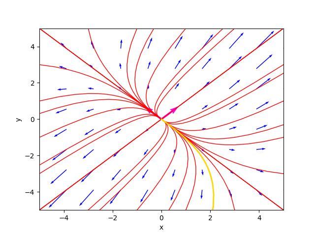
Il ritratto delle fasi nel caso di nodo instabile.
ove la traiettoria color oro è la soluzione particolare per $C_1=-1.9$ e $C_2=-4.9$.
Il diagramma della soluzione particolare è:
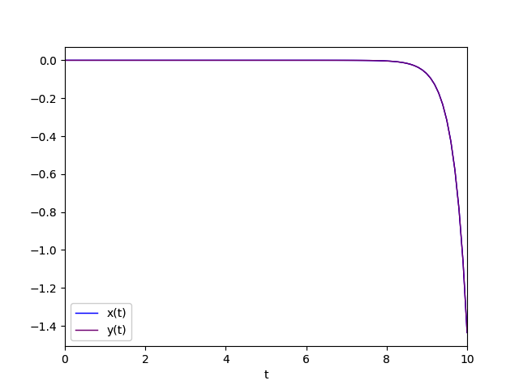
Diagramma della soluzione particolare
Autovalori reali entrambi negativi
Questo caso è simile al precedente dal punto di vista della forma della soluzione generale ma non per l'equilibrio
che è considerato stabile e infatti il punto critico
$\left[\begin{matrix} 0 & 0 \end{matrix} \right]^\dag$
è classificato come nodo stabile.
La stabilità è dovuta al fatto che al tendere di $t$ all'infinito la soluzione converge verso
$\left[\begin{matrix} 0 & 0 \end{matrix} \right]^\dag$
avvicinandosi appunto al punto di equilibrio, per cui l'equilibio è detto stabile.
La soluzione generale è della forma (1).
Un esempio che cade in questa casistica è stable_node.sh.
Il sistema è rappresentato dalla seguente matrice:
$$\left[\begin{matrix} -2 & -1 \\ -1 & -2 \end{matrix} \right]$$
Per studiare il comportamento di tale sistema si esegua il comando:
$ python cc-lin-plane-homo-sys-analyzer.py \
--matrix -2 -1 -1 -2 \
--plot_favourite_sol yes \
--C1 -1.4 --C2 1.5Critical point(s) : {(0, 0)}
Determinant : 2.9999999999999996
Eigenvalues : -1.0 -3.0
Eigenvector 1 : [0.7071067811865475, -0.7071067811865475]
Eigenvector 2 : [0.7071067811865475, 0.7071067811865475]
Kind of critical point(s) : stable node
General solution :
⎡ -1.0⋅t -3.0⋅t
⎣0.707106781186547⋅C₁⋅ℯ + 0.707106781186547⋅C₂⋅ℯ - 0.707106781186
-1.0⋅t -3.0⋅t⎤
547⋅C₁⋅ℯ + 0.707106781186547⋅C₂⋅ℯ ⎦Il ritratto delle fasi generato dal programma è il seguente:
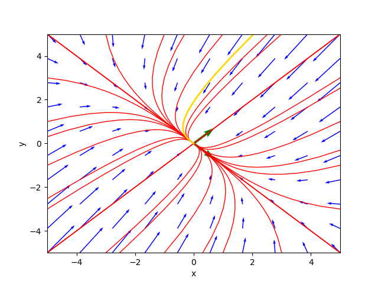
Il ritratto delle fasi nel caso di nodo stabile.
ove la traiettoria color oro è la soluzione particolare per $C_1=-1.4$ e $C_2=1.5$.
Il diagramma della soluzione particolare è:
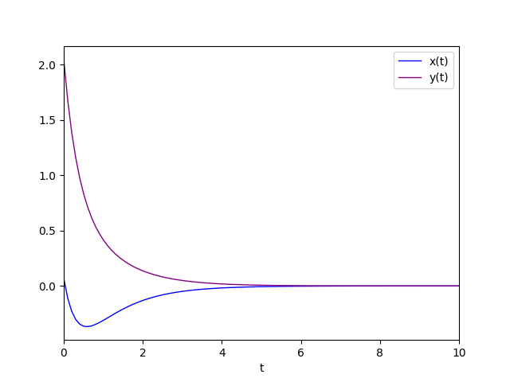
Diagramma della soluzione particolare.
Autovalori reali con segno discorde
Questo caso è simile ai due precedenti dal punto di vista della forma della soluzione generale; la stabilità invece è diversa e
il punto critico
$\left[\begin{matrix} 0 & 0 \end{matrix} \right]^\dag$
è classificato come punto sella;
la soluzione è divergente in quanto, come si evince dall'integrale generale, l'esponenziale dell'autovalore positivo moltiplicato $t$ prevale
sull'esponenziale dell'autovalore negativo moltiplicato $t$ per $t$ che tende all'infinito.
La soluzione generale è della forma (1).
Un esempio che cade in questa casistica è saddle_point.sh.
Il sistema è rappresentato dalla seguente matrice:
$$\left[\begin{matrix} -3 & 4 \\ -2 & 3 \end{matrix} \right]$$
Per studiare il comportamento di tale sistema si esegua il comando:
$ python cc-lin-plane-homo-sys-analyzer.py \
--matrix -3 4 -2 3 \
--plot_favourite_sol yes \
--C1 -1.4 --C2 1.5Critical point(s) : {(0, 0)}
Determinant : -1.0000000000000004
Eigenvalues : -1.0 1.0
Eigenvector 1 : [-0.8944271909999159, -0.4472135954999579]
Eigenvector 2 : [-0.7071067811865475, -0.7071067811865475]
Kind of critical point(s) : saddle point
General solution :
⎡ -1.0⋅t 1.0⋅t
⎣- 0.894427190999916⋅C₁⋅ℯ - 0.707106781186547⋅C₂⋅ℯ - 0.44721359549
-1.0⋅t 1.0⋅t⎤
9958⋅C₁⋅ℯ - 0.707106781186547⋅C₂⋅ℯ ⎦Il ritratto delle fasi generato dal programma è il seguente:
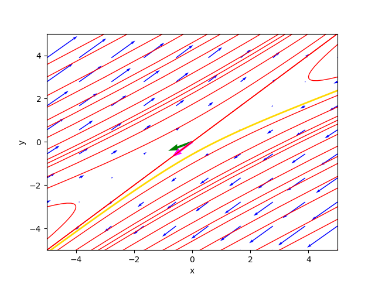
Il ritratto delle fasi nel caso di punto sella.
ove la traiettoria color oro è la soluzione particolare per $C_1=-1.4$ e $C_2=1.5$.
Il diagramma della soluzione particolare è:
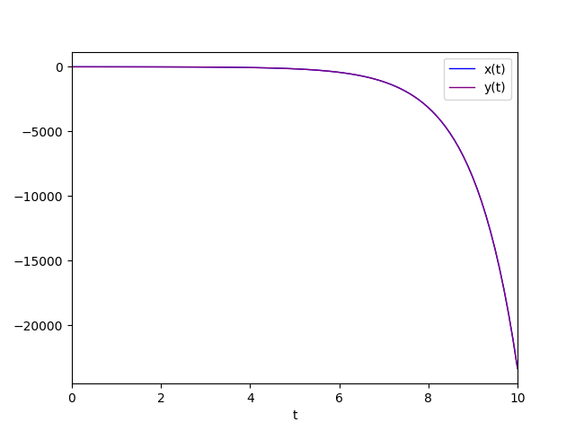
Diagramma della soluzione particolare.
Autovalori reali uguali e diversi da 0
Ovverosia un autovalore con molteplicità algebrica uguale a 2.
Si distinguono quattro sotto casi:
- Autovalore positivo con molteplicità geometrica uguale a 2.
- Autovalore negativo con molteplicità geometrica uguale a 2.
- Autovalore positivo con molteplicità geometrica uguale a 1.
- Autovalore negativo con molteplicità geometrica uguale a 1.
Autovalore positivo con molteplicità geometrica uguale a 2
In questo caso, il punto critico
$\left[\begin{matrix} 0 & 0 \end{matrix} \right]^\dag$
è classificato come nodo singolare instabile (detto anche nodo stella instabile);
l'essere singolare è dato dal fatto che l'autovalore è uno solo (con molteplicità algebrica uguale a 2)
e con molteplicità geometrica uguale a 2, che garantisce di avere comunque due autovettori linearmente indipendenti per costruire l'integrale generale.
La soluzione generale è della forma (1) con $\lambda_1=\lambda_2$.
Un esempio che cade in questa casistica è unstable_singular_node.sh.
Il sistema è rappresentato dalla seguente matrice:
$$\left[\begin{matrix} 1 & 0 \\ 0 & 1 \end{matrix} \right]$$
Per studiare il comportamento di tale sistema si esegua il comando:
$ python cc-lin-plane-homo-sys-analyzer.py \
--matrix 1 0 0 1 \
--plot_favourite_sol yes \
--C1 -2.3 --C2 -4.9Critical point(s) : {(0, 0)}
Determinant : 1.0
Eigenvalues : 1.0 1.0
Eigenvector 1 : [1.0, 0.0]
Eigenvector 2 : [0.0, 1.0]
Kind of critical point(s) : unstable singular node (said also star point)
General solution :
⎡ 1.0⋅t 1.0⋅t⎤
⎣1.0⋅C₁⋅ℯ 1.0⋅C₂⋅ℯ ⎦La soluzione generale è sempre della stessa forma di cui sopra, soltanto che il calcolo consente qualche semplificazione in quanto i due esponenziali sono uguali.
Il ritratto delle fasi generato dal programma è il seguente:
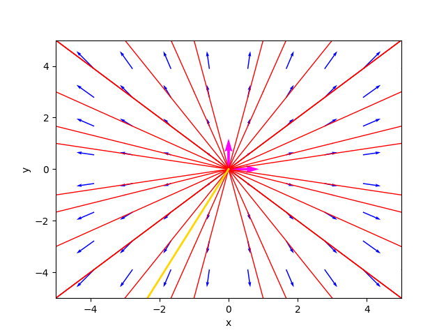
Il ritratto delle fasi nel caso di nodo singolare instabile.
ove la traiettoria color oro è la soluzione particolare per $C_1=-2.3$ e $C_2=-4.9$.
Il diagramma della soluzione particolare è:
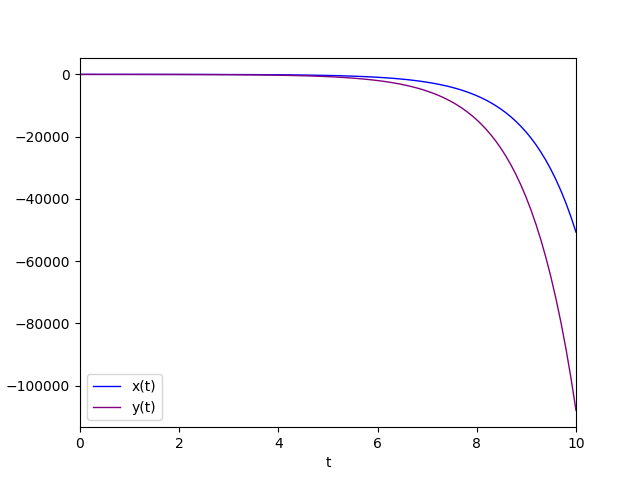
Diagramma della soluzione particolare.
Autovalore negativo con molteplicità geometrica uguale a 2
Questo caso è molto simile al caso precedente: l'unica differenza consiste nell'equilibrio del punto critico
$\left[\begin{matrix} 0 & 0 \end{matrix} \right]^\dag$
che è stabile
quindi il punto critico è classificato come nodo singolare stabile (detto anche nodo stella stabile);
l'autovalore è uno solo (con molteplicità algebrica uguale a 2) e vale -1, quindi negativo,
e con molteplicità geometrica uguale a 2, che garantisce di avere comunque due autovettori linearmente indipendenti per costruire l'integrale generale.
La soluzione generale è della forma (1) con $\lambda_1=\lambda_2$.
Un esempio che cade in questa casistica è stable_singular_node.sh.
Il sistema è rappresentato dalla seguente matrice:
$$\left[\begin{matrix} -1 & 0 \\ 0 & -1 \end{matrix} \right]$$
Per studiare il comportamento di tale sistema si esegua il comando:
$ python cc-lin-plane-homo-sys-analyzer.py \
--matrix -1 0 0 -1 \
--plot_favourite_sol yes \
--C1 -1.9 --C2 -4.4Critical point(s) : {(0, 0)}
Determinant : 1.0
Eigenvalues : -1.0 -1.0
Eigenvector 1 : [1.0, 0.0]
Eigenvector 2 : [0.0, 1.0]
Kind of critical point(s) : stable singular node (said also star point)
General solution :
⎡ -1.0⋅t -1.0⋅t⎤
⎣1.0⋅C₁⋅ℯ 1.0⋅C₂⋅ℯ ⎦Il ritratto delle fasi generato dal programma è il seguente:
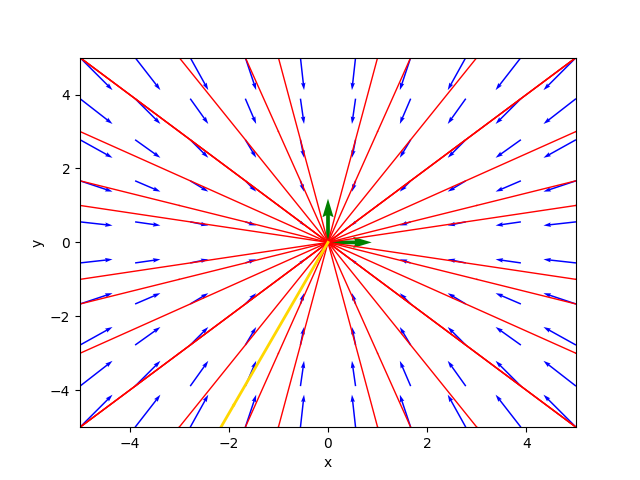
Il ritratto delle fasi nel caso di nodo singolare stabile.
ove la traiettoria color oro è la soluzione particolare per $C_1=-1.9$ e $C_2=-4.4$.
Il diagramma della soluzione particolare è:
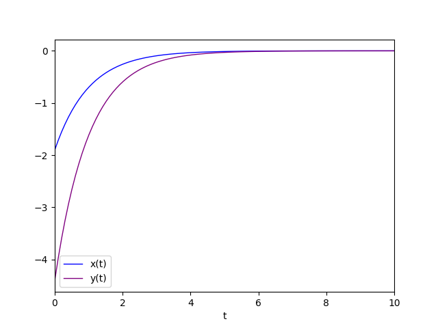
Diagramma della soluzione particolare.
Autovalore positivo con molteplicità geometrica uguale a 1
Questo caso è il più complicato in quanto la molteplicità geometrica dell'autovalore doppio uguale a 1
impedisce di avere due autovettori linearmente indipendenti e quindi si deve ricorrere alla catena di autovettori generalizzati
e usare la forma (2) dell'integrale generale ove $\lambda$ è l'autovalore doppio
e $\eta_1$ e $\eta_2$ sono due autovettori generalizzati linearmente indipendenti.
Il punto critico
$\left[\begin{matrix} 0 & 0 \end{matrix} \right]^\dag$
è classificato come nodo degenere instabile;
l'essere degenere è dato dal fatto che l'autovalore è uno solo (con molteplicità algebrica uguale a 2)
e con molteplicità geometrica uguale a 1, mentre l'instabilità è data dal segno positivo dell'autovalore.
Per il calcolo della catena di autovettori generalizzati, che è basato su un algoritmo che si serve dei blocchi di Jordan, si veda l'implementazione del programma
(precisamente la funzione Python compute_generalized_eigenvectors).
Un esempio che cade in questa casistica è unstable_degenerate_node.sh.
Il sistema è rappresentato dalla seguente matrice:
$$\left[\begin{matrix} 0 & 1 \\ -4 & 4 \end{matrix} \right]$$
Per studiare il comportamento di tale sistema si esegua il comando:
$ python cc-lin-plane-homo-sys-analyzer.py \
--matrix 0 1 -4 4 \
--plot_favourite_sol yes \
--C1 -0.4 --C2 -1.5Critical point(s) : {(0, 0)}
Determinant : 4.0
Eigenvalues : 2.0 2.0
Eigenvector 1 : [0.447213595499958, 0.8944271909999157]
Eigenvector 2 : [-0.4472135954999581, -0.8944271909999157]
Generalized Eigenvector 1 : [-2.00000000000000, -4.00000000000000]
Generalized Eigenvector 2 : [1.00000000000000, 0]
Kind of critical point(s) : unstable degenerate node
General solution :
⎡ 2.0⋅t 2.0⋅t 2.0⋅t 2.0⋅t⎤
⎣- 2.0⋅C₁⋅ℯ + C₂⋅(1.0 - 2.0⋅t)⋅ℯ - 4.0⋅C₁⋅ℯ - 4.0⋅C₂⋅t⋅ℯ ⎦Il punto critico è stato quindi classificato come nodo degenere instabile.
Il ritratto delle fasi generato dal programma è il seguente:
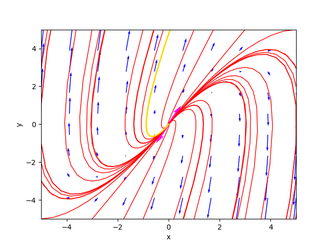
Il ritratto delle fasi nel caso di nodo degenere instabile.
ove la traiettoria color oro è la soluzione particolare per $C_1=-0.4$ e $C_2=-1.5$.
Il diagramma della soluzione particolare è:
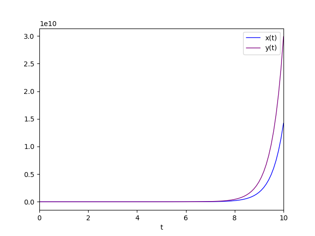
Diagramma della soluzione particolare.
Autovalore negativo con molteplicità geometrica uguale a 1
Questo caso è simile al precedente dal punto di vista della forma della soluzione generale ma non per l'equilibrio
che è considerato stabile e infatti il punto critico
$\left[\begin{matrix} 0 & 0 \end{matrix} \right]^\dag$
è classificato come nodo degenere stabile.
La soluzione generale è ovviamente della forma (2) ove $\lambda$ è l'autovalore doppio
e $\eta_1$ e $\eta_2$ sono due autovettori generalizzati linearmente indipendenti.
Un esempio che cade in questa casistica è unstable_degenerate_node.sh.
Il sistema è rappresentato dalla seguente matrice:
$$\left[\begin{matrix} 0 & 1 \\ -4 & -4 \end{matrix} \right]$$
Per studiare il comportamento di tale sistema si esegua il comando:
$ python cc-lin-plane-homo-sys-analyzer.py \
--matrix 0 1 -4 -4 \
--plot_favourite_sol yes \
--C1 -0.4 --C2 -1.5Critical point(s) : {(0, 0)}
Determinant : 4.0
Eigenvalues : -2.0 -2.0
Eigenvector 1 : [0.447213595499958, -0.8944271909999157]
Eigenvector 2 : [-0.4472135954999578, 0.8944271909999159]
Generalized Eigenvector 1 : [2.00000000000000, -4.00000000000000]
Generalized Eigenvector 2 : [1.00000000000000, 0]
Kind of critical point(s) : stable degenerate node
General solution :
⎡ -2.0⋅t -2.0⋅t -2.0⋅t -2.0⋅t⎤
⎣2.0⋅C₁⋅ℯ + C₂⋅(2.0⋅t + 1.0)⋅ℯ - 4.0⋅C₁⋅ℯ - 4.0⋅C₂⋅t⋅ℯ ⎦Il punto critico è stato quindi classificato come nodo degenere stabile.
Il ritratto delle fasi generato dal programma è il seguente:
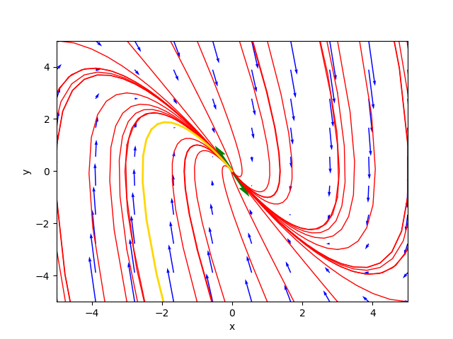
Il ritratto delle fasi nel caso di nodo degenere stabile.
ove la traiettoria color oro è la soluzione particolare per $C_1=-0.4$ e $C_2=-1.5$.
Il diagramma della soluzione particolare è:
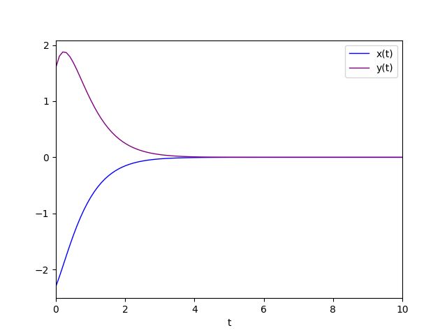
Diagramma della soluzione particolare.
Autovalori complessi coniugati
Nel caso di autovalori complessi, essi sono necessariamente coniugati per il teorema fondamentale dell'algebra
in quanto i coefficienti della matrice $A$ sono reali.
Si distinguono tre sotto casi:
- Autovalori complessi coniugati con parte reale positiva.
- Autovalori complessi coniugati con parte reale negativa.
- Autovalori complessi coniugati con parte reale nulla.
Autovalori complessi coniugati con parte reale positiva
In questo caso il punto critico
$\left[\begin{matrix} 0 & 0 \end{matrix} \right]^\dag$
è classificato come focus instabile.
L'instabilità è sempre dovuta al fatto che al tendere di $t$ all'infinito la soluzione diverge
allontanandosi appunto dal punto di equilibrio, per cui l'equilibio è detto instabile.
La soluzione generale è della forma (3).
Un esempio che cade in questa casistica è unstable_focus.sh.
Il sistema è rappresentato dalla seguente matrice:
$$\left[\begin{matrix} 1 & 1 \\ -1 & 1 \end{matrix} \right]$$
Per studiare il comportamento di tale sistema si esegua il comando:
$ python cc-lin-plane-homo-sys-analyzer.py \
--matrix 1 1 -1 1 \
--plot_favourite_sol yes \
--C1 -2.9 --C2 -3.9Critical point(s) : {(0, 0)}
Determinant : 2.0
Eigenvalues : (1+1j) (1-1j)
Eigenvector 1 : [(0.7071067811865475+0j), 0.7071067811865475j]
Eigenvector 2 : [(0.7071067811865475-0j), -0.7071067811865475j]
Kind of critical point(s) : unstable focus
General solution :
⎡ 1.0⋅t 1.0⋅t
⎣0.707106781186547⋅C₁⋅ℯ ⋅cos(1.0⋅t) + 0.707106781186547⋅C₂⋅ℯ ⋅cos(1.0⋅
1.0⋅t 1.0⋅t
t) - 0.707106781186547⋅C₁⋅ℯ ⋅sin(1.0⋅t) - 0.707106781186547⋅C₂⋅ℯ ⋅sin
⎤
(1.0⋅t)⎦Il ritratto delle fasi generato dal programma è il seguente:
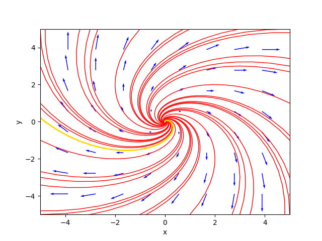
Il ritratto delle fasi nel caso di focus instabile.
ove la traiettoria color oro è la soluzione particolare per $C_1=-2.9$ e $C_2=-3.9$.
Il diagramma della soluzione particolare è:
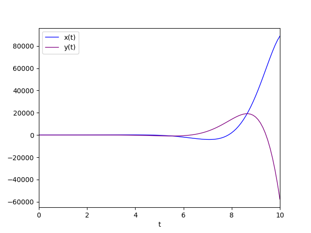
Diagramma della soluzione particolare.
Autovalori complessi coniugati con parte reale negativa
Questo caso è simile al precedente dal punto di vista della forma della soluzione generale ma non per l'equilibrio;
che è considerato stabile e infatti il punto critico
$\left[\begin{matrix} 0 & 0 \end{matrix} \right]^\dag$
è classificato come focus stabile.
La stabilità è dovuta al fatto che al tendere di $t$ all'infinito la soluzione converge verso
$\left[\begin{matrix} 0 & 0 \end{matrix} \right]^\dag$
avvicinandosi appunto al punto di equilibrio, per cui l'equilibio è detto stabile.
La soluzione generale è della forma (3).
Un esempio che cade in questa casistica è stable_focus.sh.
Il sistema è rappresentato dalla seguente matrice:
$$\left[\begin{matrix} -1 & -1 \\ 1 & -1 \end{matrix} \right]$$
Per studiare il comportamento di tale sistema si esegua il comando:
$ python cc-lin-plane-homo-sys-analyzer.py \
--matrix -1 -1 1 -1 \
--plot_favourite_sol yes \
--C1 1.3 --C2 -1.4Critical point(s) : {(0, 0)}
Determinant : 2.0
Eigenvalues : (-1+1j) (-1-1j)
Eigenvector 1 : [(0.7071067811865475+0j), -0.7071067811865475j]
Eigenvector 2 : [(0.7071067811865475-0j), 0.7071067811865475j]
Kind of critical point(s) : stable focus
General solution :
⎡ -1.0⋅t -1.0⋅t
⎣0.707106781186547⋅C₁⋅ℯ ⋅cos(1.0⋅t) + 0.707106781186547⋅C₂⋅ℯ ⋅cos(1.0⋅t)
-1.0⋅t -1.0⋅t
0.707106781186547⋅C₁⋅ℯ ⋅sin(1.0⋅t) + 0.707106781186547⋅C₂⋅ℯ ⋅sin(1.0⋅t
⎤
)⎦Il ritratto delle fasi generato dal programma è il seguente:
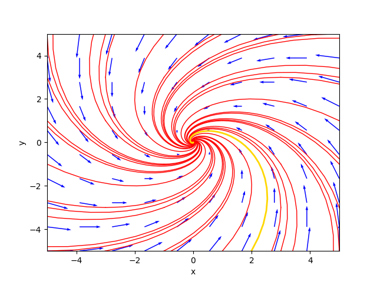
Il ritratto delle fasi nel caso di focus stabile.
ove la traiettoria color oro è la soluzione particolare per $C_1=1.3$ e $C_2=-1.4$.
Il diagramma della soluzione particolare è:
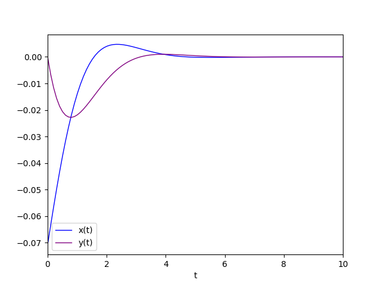
Diagramma della soluzione particolare.
Autovalori complessi coniugati con parte reale nulla
In questo caso il punto critico
$\left[\begin{matrix} 0 & 0 \end{matrix} \right]^\dag$
è classificato come centro.
Non si può parlare di equilibrio perché le soluzioni sono oscillanti e le orbite sono ellissi concentriche
centrate sull'origine.
La soluzione generale è della forma (3).
Un esempio che cade in questa casistica è center.sh.
Il sistema è rappresentato dalla seguente matrice:
$$\left[\begin{matrix} 0 & 2 \\ -2 & 0 \end{matrix} \right]$$
Per studiare il comportamento di tale sistema si esegua il comando:
$ python cc-lin-plane-homo-sys-analyzer.py \
--matrix 0 2 -2 0 \
--plot_favourite_sol yes \
--C1 1.8 --C2 2.0Critical point(s) : {(0, 0)}
Determinant : 4.0
Eigenvalues : 2.0000000000000004j -2.0000000000000004j
Eigenvector 1 : [-0.7071067811865475j, (0.7071067811865476+0j)]
Eigenvector 2 : [0.7071067811865475j, (0.7071067811865476-0j)]
Kind of critical point(s) : center
General solution :
[0.707106781186547⋅C₁⋅sin(2.0⋅t) + 0.707106781186547⋅C₂⋅sin(2.0⋅t) 0.707106781186
548⋅C₁⋅cos(2.0⋅t) + 0.707106781186548⋅C₂⋅cos(2.0⋅t)]Il ritratto delle fasi generato dal programma è il seguente:
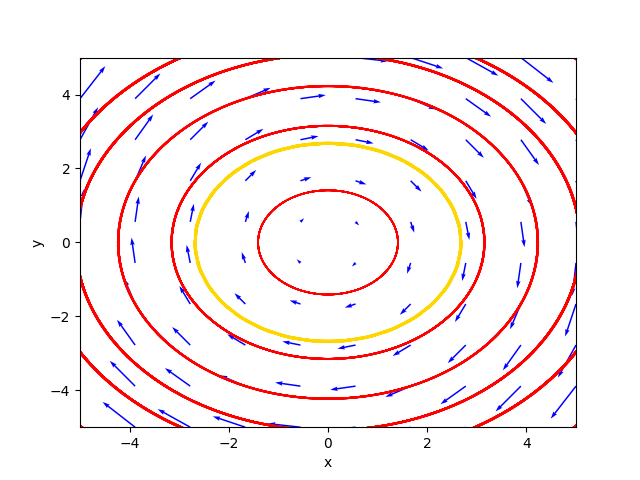
Il ritratto delle fasi nel caso di centro.
ove la traiettoria color oro è la soluzione particolare per $C_1=1.8$ e $C_2=2.0$.
Il diagramma della soluzione particolare è:
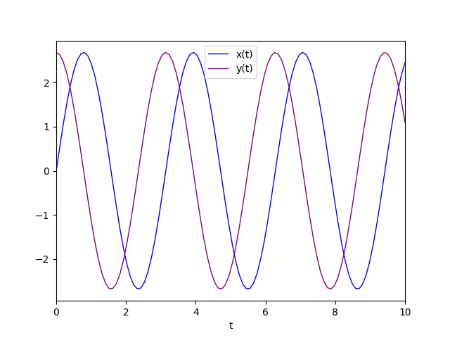
Diagramma della soluzione particolare.
Sistemi dinamici lineari omogenei non semplici
Un sistema dinamico lineare e omogeneo si dice non semplice se il determinante della matrice $A$ è uguale a zero.
In questo caso l'insieme dei punti critici è una retta che passa per l'origine,
oppure l'intero piano nel banalissimo e particolarissimo caso che la matrice $A$ sia la matrice nulla.
Dall'algebra lineare si sa che se il determinante è 0 almeno un autovalore è 0, che è reale,
per cui anche anche l'altro autovalore deve essere reale, per il teorema fondamentale dell'algebra
essendo i coefficienti della matrice reali.
Detto questo, si distinguono due casi:
- Il secondo autovalore diverso da 0.
- Il secondo autovalore uguale a 0.
Il secondo autovalore diverso da 0
Si distinguono ulteriormente due sotto casi:
- Il secondo autovalore è reale positivo.
- Il secondo autovalore è reale negativo.
Il secondo autovalore è reale positivo
In questo caso i punti critici sono infiniti e giacciono su una retta passante per l'origine e l'insieme dei punti critici è classificato come linea instabile.
L'instabilità è dovuta, come visto sopra, alla positività dell'autovalore che fa divergere la soluzione al tendere di $t$ all'infinito.
La soluzione generale è della forma (1) con $\lambda_1$ uguale a 0.
Un esempio che cade in questa casistica è unstable_line.sh.
Il sistema è rappresentato dalla seguente matrice:
$$\left[\begin{matrix} 0 & -1 \\ 0 & 2 \end{matrix} \right]$$
Per studiare il comportamento di tale sistema si esegua il comando:
$ python cc-lin-plane-homo-sys-analyzer.py \
--matrix 0 -1 0 2 \
--plot_favourite_sol yes \
--C1 2.0 --C2 3.2Critical point(s) : {(x, 0)}
Determinant : 0.0
Eigenvalues : 0.0 2.0
Eigenvector 1 : [1.0, 0.0]
Eigenvector 2 : [-0.4472135954999579, 0.8944271909999159]
Kind of critical point(s) : unstable line
General solution :
⎡ 2.0⋅t 2.0⋅t⎤
⎣1.0⋅C₁ - 0.447213595499958⋅C₂⋅ℯ 0.894427190999916⋅C₂⋅ℯ ⎦Il ritratto delle fasi generato dal programma è il seguente:
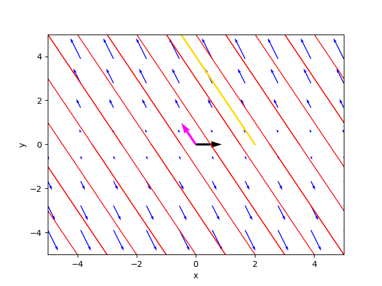
Il ritratto delle fasi nel caso di linea instabile.
ove la traiettoria color oro è la soluzione particolare per $C_1=2.0$ e $C_2=3.2$.
Il diagramma della soluzione particolare è:
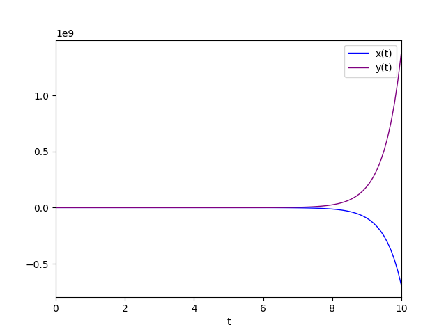
Diagramma della soluzione particolare.
Il secondo autovalore è reale negativo
Questo caso è simile al precedente dal punto di vista della forma della soluzione generale ma non per l'equilibrio
che è considerato stabile e infatti in questo caso i punti critici sempre infiniti e sempre giacciono su una retta passante per l'origine
ma l'insieme dei punti critici stavolta è classificato come linea stabile.
La stabilità è dovuta alla negatività dell'autovalore che fa convergere la soluzione al tendere di $t$ all'infinito.
La soluzione generale è della forma (1) con $\lambda_1$ uguale a 0.
Un esempio che cade in questa casistica è stable_line.sh.
Il sistema è rappresentato dalla seguente matrice:
$$\left[\begin{matrix} 1 & 1 \\ -2 & -2 \end{matrix} \right]$$
Per studiare il comportamento di tale sistema si esegua il comando:
$ python cc-lin-plane-homo-sys-analyzer.py \
--matrix 1 1 -2 -2 \
--plot_favourite_sol yes \
--C1 3.0 --C2 3.2Critical point(s) : {(-1.0⋅y, y)}
Determinant : 0.0
Eigenvalues : 0.0 -1.0
Eigenvector 1 : [0.7071067811865475, -0.7071067811865475]
Eigenvector 2 : [-0.4472135954999579, 0.8944271909999159]
Kind of critical point(s) : stable line
General solution :
⎡ -1.0⋅t
⎣0.707106781186547⋅C₁ - 0.447213595499958⋅C₂⋅ℯ -0.707106781186547⋅C₁ + 0.89
-1.0⋅t⎤
4427190999916⋅C₂⋅ℯ ⎦Il ritratto delle fasi generato dal programma è il seguente:
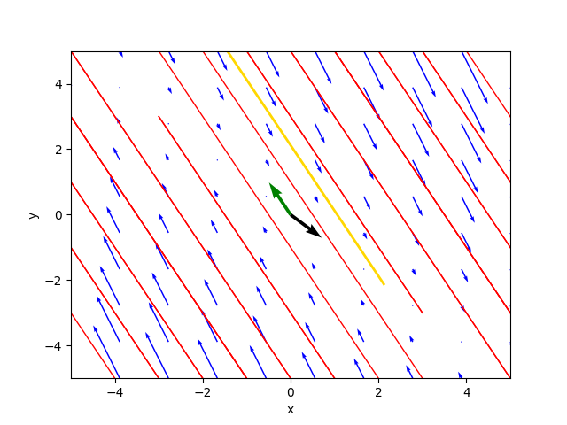
Il ritratto delle fasi nel caso di linea stabile.
ove la traiettoria color oro è la soluzione particolare per $C_1=3.0$ e $C_2=3.2$.
Il diagramma della soluzione particolare è:
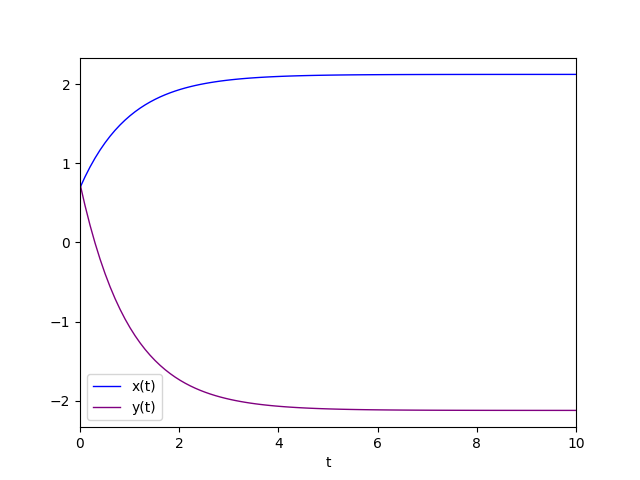
Diagramma della soluzione particolare.
Il secondo autovalore è uguale a 0
Quindi l'autovalore 0 è doppio, ovverosia ha molteplicità algebrica uguale a 2.
Si distinguono ulteriormente due sotto casi:
- L'autovalore 0 doppio con molteplicità geometrica uguale a 1.
- L'autovalore 0 doppio con molteplicità geometrica uguale a 2.
L'autovalore 0 doppio con molteplicità geometrica uguale a 1
Questo caso è complicato in quanto la molteplicità geometrica dell'autovalore doppio uguale a 1
impedisce di avere due autovettori linearmente indipendenti e quindi si deve ricorrere alla catena di autovettori generalizzati
e usare la forma (2) dell'integrale generale ove $\lambda$ è 0
e $\eta_1$ e $\eta_2$ sono due autovettori generalizzati linearmente indipendenti.
In questo caso i punti critici sono infiniti e giacciono su una retta passante per l'origine e l'insieme dei punti critici è classificato come linea degenere
l'essere degenere è dato dal fatto che l'autovalore è uno solo (quello nullo con molteplicità algebrica uguale a 2)
e con molteplicità geometrica uguale a 1.
Per il calcolo della catena di autovettori generalizzati, che è basato su un algoritmo che si serve dei blocchi di Jordan, si veda l'implementazione del programma
(precisamente la funzione Python compute_generalized_eigenvectors).
Un esempio che cade in questa casistica è degenerate_line.sh.
Il sistema è rappresentato dalla seguente matrice:
$$\left[\begin{matrix} 0 & 1 \\ 0 & 0 \end{matrix} \right]$$
Per studiare il comportamento di tale sistema si esegua il comando:
$ python cc-lin-plane-homo-sys-analyzer.py \
--matrix 0 1 0 0Critical point(s) : {(x, 0)}
Determinant : 0.0
Eigenvalues : 0.0 0.0
Eigenvector 1 : [1.0, 0.0]
Eigenvector 2 : [-1.0, 2.004168360008973e-292]
Generalized Eigenvector 1 : [1.00000000000000, 0]
Generalized Eigenvector 2 : [0, 1.00000000000000]
Kind of critical point(s) : degenerate line
General solution :
[1.0⋅C₁ + 1.0⋅C₂⋅t 1.0⋅C₂]La retta dei punti critici è stata classificata come linea degenere.
Il ritratto delle fasi generato dal programma è il seguente:
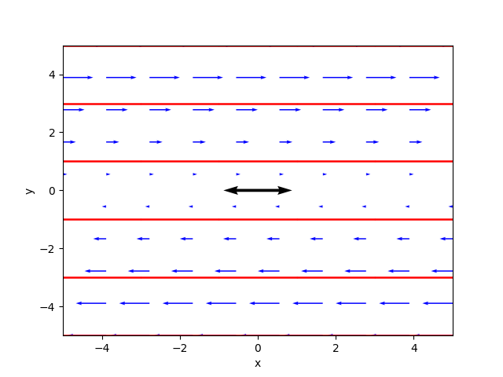
Il ritratto delle fasi nel caso di linea degenere.
L'autovalore 0 doppio con molteplicità geometrica uguale a 2
Questo caso è particolarissimo e banalissimo e corrisponde alla matrice $A$ nulla.
L'insieme dei punti critici è costituito dall'intero piano.
Un esempio che cade in questa casistica è degenerate_line.sh.
Il sistema è rappresentato dalla seguente matrice:
$$\left[\begin{matrix} 0 & 0 \\ 0 & 0 \end{matrix} \right]$$
Per studiare il comportamento di tale sistema si esegua il comando:
$ python cc-lin-plane-homo-sys-analyzer.py \
--matrix 0 0 0 0Critical point(s) : {(x, y)}
Determinant : 0.0
Eigenvalues : 0.0 0.0
Eigenvector 1 : [1.0, 0.0]
Eigenvector 2 : [0.0, 1.0]
Kind of critical point(s) : whole plane
General solution :
NoneL'insieme dei punti critici è stato classificato come intero piano.
Citazioni
Serena Costanzini
ANALISI DEI SISTEMI DINAMICI E DELLA LORO STABILITA' NELLE APPLICAZIONI ECONOMICHE
Alma Mater Studiorum · Università di Bologna
2008/2009Bibliografia
Stephen Lynch
Dynamical Systems with Applications using Python
Springer
2018Download del codice completo
Il codice completo è disponibile su GitHub.
Questo materiale è distribuito su licenza MIT; sentiti libero di usare, condividere, "forkare" e adattare tale materiale come credi.
Sentiti anche libero di pubblicare pull-request e bug-report su questo repository di GitHub oppure di contattarmi sui miei canali social disponibili nell'angolo in alto a destra di questa pagina.